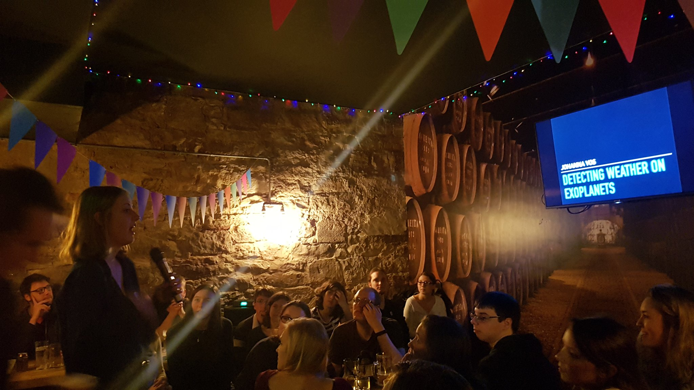

Science Research Mentoring Program
Since coming the the American Museum of Natural History, I have been a Research Mentor in the Science Reserch Mentoring Program (SRMP). This involves mentoring three high-school students throughout the school year to complete a research project. Students learn a wide array of research skills, while strengthening their sense of community with their fellow SRMP peers and musuem scientists. If you are interested in this program you can learn more here.

Undergraduate Research Advising

After-School Classes at AMNH
